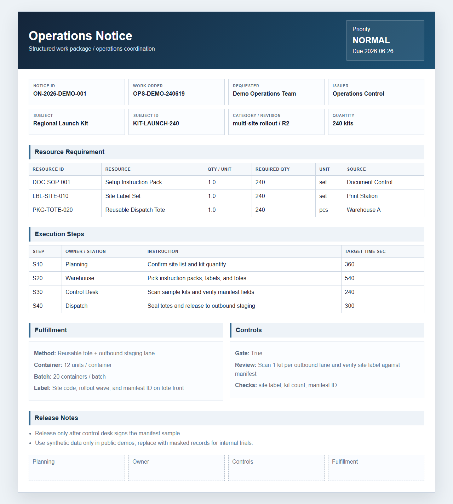

Warehouse Fulfillment
拣配、标签、容器、批次和出库检查。
Picking, labels, containers, batches, and dispatch checks.
v0.3.0 · local-first · contract-driven
把 CSV 或 JSON work package 转换成可审核的 Excel、网页预览、manifest 和 agent context。公开版面向制造、仓储、维修、现场服务和合规审查，默认本地运行，默认人工放行。
Convert CSV or JSON work packages into review-ready Excel, browser previews, manifests, and agent context. Built for manufacturing, warehouse, maintenance, service, and compliance workflows with local-first defaults.
展示页首要展示真实生成物：通知预览、合同化接口、发布 manifest 和下游 agent context。
The showcase leads with generated artifacts: notice preview, contract surface, release manifest, and downstream agent context.

界面语言刻意偏“操作系统工具”：少装饰，强信息密度，突出可运行命令、产物边界和安全默认值。
The interface deliberately feels like an operations tool: restrained styling, high information density, runnable commands, artifact boundaries, and safety defaults.
流程区参考优秀自动化平台的表达方式：先讲路径，再讲扩展点，最后讲安全门禁。
The workflow section follows strong automation pages: path first, extension points next, safety gates last.
顶尖开源项目的主页会让访问者立刻知道如何运行、如何验证、如何判断项目是否可信。这里把最短路径直接放在展示页。
Strong open-source product pages show how to run, verify, and trust the project quickly. This page puts the shortest path in view.
Profile 只提供场景默认语义，核心模型仍然使用 subject、resources、steps、fulfillment 和 controls。
Profiles provide scenario semantics while the core model stays on subject, resources, steps, fulfillment, and controls.
拣配、标签、容器、批次和出库检查。
Picking, labels, containers, batches, and dispatch checks.
资源、步骤、履约和质量门禁。
Resources, steps, fulfillment, and quality gates.
设备、工具、备件和关闭证据。
Assets, tools, spare parts, and closeout evidence.
任务包、人员交接、路由和完成证据。
Task packets, crew handoff, routing, and completion evidence.
证据清单、审批轨迹和留存规则。
Evidence lists, approval trails, and retention rules.
展示页不只讲能力，也直接交代项目的质量边界、发布记录和维护材料。
The page documents not only capability, but quality boundaries, releases, and maintenance materials.
CLI、CSV 适配器、模型解析和 HTTP API 共用验证语义。
CLI, CSV adapter, model parser, and HTTP API share validation semantics.
Excel 写入前处理公式型文本和控制字符，降低公开 demo 风险。
Formula-like text and control characters are handled before Excel export.
发布记录、changelog、roadmap、issue template 和 support 文档保持可追溯。
Releases, changelog, roadmap, issue templates, and support docs are traceable.
CI 覆盖测试、样例验证、CSV 导入、生成和发布包内容检查。
CI covers tests, sample validation, CSV import, generation, and package checks.
顶尖项目不会只放一张漂亮图，还会把接口、边界和验证入口放到访问者可以立刻理解的位置。
Strong projects do not stop at a beautiful visual. They put interfaces, boundaries, and verification paths where visitors can understand them quickly.